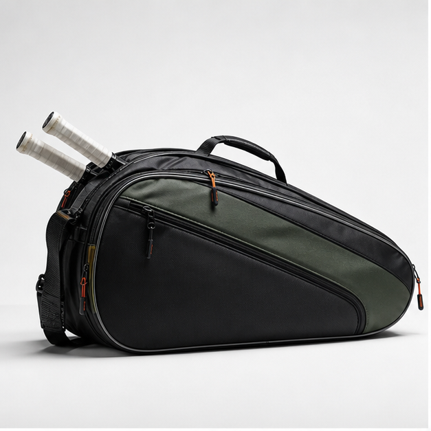
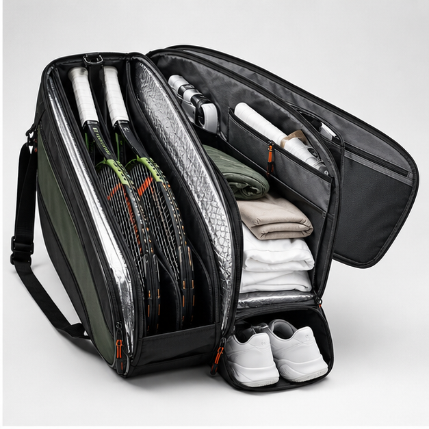
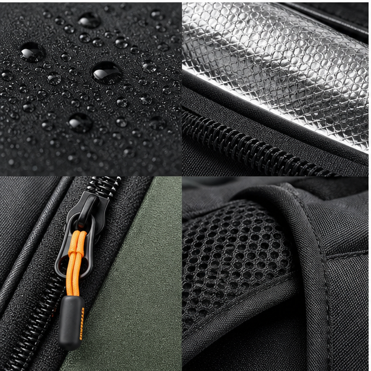
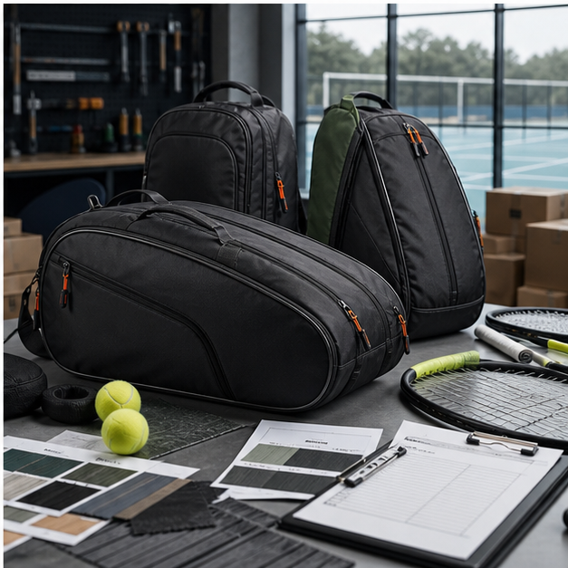

A tennis bag page needs more than a generic guide
A useful custom tennis bag program starts with the player and channel, not with a list of standard features. Competitive players carry multiple racquets, shoes, apparel, grips, towels, bottles and recovery items. Casual players may want a compact backpack that works for the court and daily commute. Retail buyers care about shelf appeal, freight volume and return rates. Cappuccino Bags develops custom tennis bags for brands that need those requirements translated into samples, specifications and bulk production.
Many 'Custom Tennis Bag Guide' pages online repeat the same thin advice: choose material, add logo, select size. That does not help a buyer avoid mistakes. The real decisions are more specific: how many racquets should fit without bending the zipper line, whether thermal lining is worth the cost, how the shoe pocket affects main capacity, how the bag stands when loaded, and how decoration holds up on curved coated fabric.
Racquet capacity and body architecture
Tennis racquet bags are often discussed as three, six, nine or twelve racquet formats, but the number alone is not enough. A three-racquet bag for beginner retail can be narrow and light. A six-racquet bag may need a stronger center body, dual carry handles and a comfortable shoulder strap. A nine-racquet tournament bag needs better panel support, durable zipper curves and enough separation between racquets, apparel and shoes.
The pattern should respect the racquet shape. If the compartment narrows too aggressively near the handle area, the racquet can press against the zipper. If the front panel is too soft, the bag may collapse in product photos. We evaluate compartment height, gusset depth, foam placement and zipper radius during sampling so the bag looks strong and functions well.
Thermal lining, foam and interior decisions
Thermal lining is a valuable feature when marketed honestly. It can help reduce heat exposure for strings and racquets, especially in hot climates or car storage situations, but it is not magic. The lining should be paired with appropriate foam and clean stitching, otherwise it can wrinkle or tear. Buyers should decide whether one or both racquet compartments need thermal lining based on price tier and sales story.
Interior color is another practical choice. Dark linings hide dirt but make small items harder to find. Light gray or silver linings look technical and support product photos, but stains are more visible. Accessory pockets need zipper openings that match actual hand movement; a pocket that looks nice but is difficult to reach will disappoint players.
Materials, trims and brand execution
Common tennis bag materials include 600D polyester, 900D polyester, nylon, PU-coated fabric, tarpaulin-style panels, PE board, EVA foam, air mesh, thermal film and jacquard webbing. The right choice depends on price target and brand language. A value line can use durable polyester with clean printing. A premium line may use matte coated fabric, custom pullers, rubber patches, tonal webbing and reinforced bottom panels.
Large logos on tennis bags require careful placement because racquet bags have curved surfaces and zipper paths. Embroidery may be strong for patches or small marks, while heat transfer can look clean on flat panels. Rubber badges and woven labels are reliable for premium programs. We help buyers match decoration method to material and panel shape rather than treating branding as an afterthought.
Factory sampling workflow
A strong tennis bag sample brief includes racquet capacity, target size, material references, lining preference, strap layout, shoe pocket requirement, logo method, colorway, packaging and estimated order volume. We review the brief and create a sample plan that can be adjusted after the first prototype. The first sample often reveals practical issues: a zipper curve that needs easing, a shoulder strap that needs more padding, a shoe tunnel that steals too much interior space, or a logo that should move away from a seam.
Useful sample feedback is specific. Instead of saying 'make it more premium,' buyers can request thicker foam in the front panel, a matte coated fabric, a molded zipper puller, cleaner binding, a stronger bottom panel or a revised pocket opening. That kind of feedback shortens development time and produces a more reliable bulk order.
QC details before shipment
Before shipment, tennis bag QC should include racquet fit, zipper operation, strap anchoring, handle strength, logo position, lining cleanliness, pocket function, stitching consistency and packing shape. For private-label orders, QC photos can document front, back, side, inner compartments, logo detail, carton mark and packing method. This is especially useful for international buyers who cannot visit the factory for every production run.
Cappuccino Bags supports export-ready packing for global buyers, including individual polybags, hang tags, carton labels and buyer-specific packaging instructions. That matters because a well-made bag can still create problems if it arrives compressed, mislabeled or difficult for the warehouse to receive.
Buyer specification checklist for tennis bag development
A serious tennis bag brief should state the racquet capacity, player level, price tier and sales channel. A three-racquet club bag, a six-racquet retail bag and a nine-racquet tournament bag may share similar materials but require different body structures. Buyers should define whether the product needs one thermal compartment or multiple thermal areas, whether shoes must be separated, whether backpack straps are required, and whether the bag should stand firmly for product photography.
The specification should also include zipper quality, handle style, shoulder strap padding, lining color, bottom reinforcement, accessory pockets, logo method and packaging requirements. For tennis bags, it is useful to provide target racquet dimensions because handle length and head width affect zipper placement. A bag that looks correct but presses the racquet at the zipper curve can create customer complaints.
Cost drivers and performance trade-offs
Tennis bags can become expensive because long zipper paths, large panels, thermal lining, foam, PE board and multiple compartments all add material and labor. Buyers sometimes request every premium feature from competitor products, then discover the target price cannot support them. A better method is to rank the features: racquet protection, carry comfort, shoe separation, logo presentation, material handfeel and packing efficiency.
Thermal lining is often worth using when the sales story depends on racquet protection, but it may not be needed in every compartment. Custom zipper pullers can lift perceived value, but standard pullers with a clean woven patch may be enough for a mid-range line. A reinforced bottom panel is usually more useful than a hidden decorative pocket because it improves durability and shape.
Sample review questions that prevent weak content and weak products
A buyer reviewing a tennis sample should ask specific questions. Do three, six or nine racquets fit the way the product promise says they will? Does the thermal compartment close smoothly when racquets are inside? Does the shoe pocket take usable space away from apparel storage? Does the shoulder strap sit comfortably when the bag is loaded? Does the front logo remain flat, or does it distort over a curved panel?
Those questions create a more valuable product page as well as a better product. Instead of publishing generic advice such as 'choose durable materials,' a brand can explain why it selected a reinforced bottom, a specific thermal layout or a certain strap system. Google and customers both respond better to content that reflects real product decisions and actual buyer trade-offs.
Image proof and case evidence to add before final publishing
For a tennis page, real proof should include racquet-fit photos for the promised capacity, a thermal lining close-up, the shoe pocket with real shoes, and a loaded bag standing or being carried. These photos answer practical questions that generic tennis bag articles ignore. If the page later includes a buyer case, it should explain the capacity target, material change, sample revision and QC focus rather than only showing a finished product shot.
RFQ mistakes to avoid
For tennis bags, the weakest RFQs say only 'three racquet bag' or 'six racquet bag' without defining thermal lining, shoe pocket, strap style and finished size. Those missing details affect cost and function. Buyers should provide racquet capacity, target dimensions, compartment count, material level, logo method, packaging and a reference price tier whenever possible.
Send us your target product brief
Share reference photos, expected order quantity, target price level, material preference, logo method and packaging needs. Cappuccino Bags can review the concept and suggest a practical sample route.
Request OEM/ODM Support